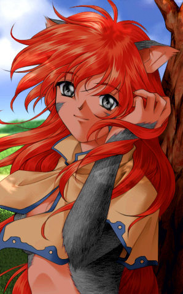

|

|
Das schwarze Brett
|
|
| Übersicht,
Geschichten (RPG) |
|
Die Gesänge der Wale (32  ) )
|
Lyra Callionymus
  |
In einer Zeit, in der Piraten ihre Schiffe auf der Suche nach Beute über die Meere navigieren, in der Elfen durch die Wälder tanzen, Zwerge über die Berge klettern und Orks versuchen, das zu zerstören, was Menschen in ihrem Lebensraum aufgebaut haben, fällt es nicht leicht, über diese Horizonte hinauszublicken.
Noch heute fehlt mir jede Erinnerung daran, wie ich auf die Scherbe kam. Mein allererster Gedanke gilt einem großen schwarzen Denkmal. Inzwischen weis ich, dass es sich bei Lager Nord auf der Lagerinsel befindet.
Dort begann ich meine Reise über die Scherbe. Ich möchte nun nicht damit beginnen, rückblickend auf mein bisheriges Leben darüber zu berichten. Sicherlich werde ich im Laufe dieser Ausführungen auf das Eine oder Andere zurückkommen, was mir bisher wiederfahren ist.
Alles in Allem soll jedoch in erster Linie von meinen Forschungen die Rede sein.
Bereits zum heutigen Zeitpunkt wurden mir Tatsachen gewahr, über welche bislang noch nie nachgedacht wurde.
Ich verfolge die Wege der Wale, lausche ihren Gesängen, beobachte das Wetter und bin davon überzeugt, am Ende meiner Forschungen eine Sensation verkünden zu können.
Lyra Callionymus,
Anführerin der glorreichen Nation "Freie Walfänger"
Zur 9. Stunde am 54.Erntemond im Jahre 446 |
05.06.11 16:44
|
|
Lyra Callionymus
|
Schön ist das Leben als Fischerin. Seit ich denken kann, hatte ich immer andere Einnahmequellen. Begonnen hatte ich mit einer Goldmine. Gold verkaufte sich immer gut auf Loh. Auch lebte ich am Anfang vom Verkauf kleiner Heiltränke. Als ich dann Bürgermeisterin auf Schloss Tantopia war, verdiente ich nicht schlecht mit Luxus.
Nach meinem Umzug nach Castello di Tantopia konzentrierte ich dann Alles auf eine Pumpe und verdiente dadurch auch ganz gut.
Doch war das immer mit reichlich Arbeit verbunden.
Armeen mußten versorgt werden und das kostete immer Zeit und Geld.
Als Fischerin ist das Leben wieder schön. Ich segel kreuz und quer herum, immer auf der Suche nach Walfischen und wenn ich genug habe, dann lege ich mich einfach irgendwo an den Strand und döse vor mich hin.
Gestern kam ein Mann und fragte mich, ob ich heute schon etwas gefangen habe. Ich sagte ja, zwei Fische. Er fragte mich, warum ich nicht nochmal rausfahre, um weitere Fische zu fangen.
Daraufhin fragte ich ihn, warum ich das tun sollte. Er erklärte mir, naja, wenn ich mehr Fische fangen würde, dann könnte ich sie verkaufen und dann könnte ich mich vergrößern und weitere Fischer beschäftigen und bräuchte dann irgendwann nicht mehr arbeiten zu gehen.
Da antwortete ich ihm: aber ich arbeite doch gar nicht.
Nun muß ich aber trotzdem bald ein Gasthaus errichten. Hier auf dieser einsamen Insel, auf der sich nun all meine Schiffe befinden.
Denn bald beginnt der Dunkelfrost und dann brauchen meine Magier einen Platz zum speisen, damit wir die Eisberge in den Griff bekommen.
Lyra Callionymus,
Anführerin der glorreichen Nation "Freie Walfänger"
Zur 18. Stunde am 71.Erntemond im Jahre 446 |
09.06.11 18:11
|
|
Lyra Callionymus
|
Schön ruhig vergingen auch die vergangenen Tage. Allerdings hat sich nun ein Pirat auf meinem Land breitgemacht.
Er hat jedoch bloß die schwarze Flagge und nicht die rote gehisst. Also kein besonderer Grund zur Beunruhigung. Wahrscheinlich möchte er nur die Ruhe hier genießen, was ich durchaus verstehen kann.
Für eine Weile werde ich ihn noch dulden. Doch sollte sich Niemand dem Fortschritt in den Weg stellen, auch im eigenen Interesse.
Eines Nachts sah ich auf dem Meer seltsame Lichterscheinungen. Sie bewegten sich sehr schnell, blieben plötzlich in der Luft stehen und änderten schlagartig die Richtung.
Ich vermute, dass es sich um sehr große Drachen handelt. Eine ganze Weile beobachte ich das. Je näher sie kamen, desto heller leuchteten sie. Das Licht blendete mich gar. Dann verschwanden sie blitzartig.
Die Eisberge scheinen mich dieses Jahr zu verschonen, leider. Zum ersten mal in meinem Leben habe ich mir gewünscht, das Alles einfriert, damit ich in Ruhe das unterirdische Tunnelsystem konstruieren kann, welches notwendig werden wird in der Zeit nach der Gegenwart.
Schon zu viele Seeleute starben bei dem Versuch, das gelobte Land außerhalb der Karte zu erreichen.
Sie suchten nach Portalen und versenkten zahlreiche Schiffe. Dabei erklären sich viele Wege von selbst. Der Rand der Scherbe dürfte nur unterirdisch erreichbar sein. Meiner Meinung nach kann nur ein Tunnel zum Rand der Scherbe führen.
Erst wenn die genaue Größe der Scherbe vermessen wurde, ist mit Sicherheit auszuschließen, das es noch weitere Inseln gibt.
Doch ist dies nicht das Ziel meiner gegenwärtigen Forschungen. Es ist nicht mein Plan, einen Tunnel zum Rand der Scherbe zu buddeln.
Trotzdem sehne ich mich danach, herumzubuddeln. Nach der Seefahrerei und der Fischerei gehört das graben von Tunneln nach wie vor zu meinen liebsten Beschäftigungen.
Lyra Callionymus,
Anführerin der glorreichen Nation "Freie Walfänger"
Zur 10. Stunde am 19.Dunkelfrost im Jahre 446 |
18.06.11 13:06
|
|
Lyra Callionymus
|
Constantin hat vor ein paar Tagen seinen siebten Geburtstag gefeiert. An seinen Vater kann er sich nicht mehr erinnern. Einzig sein Schaukelschiffchen, in dem er als Baby geschlafen hat, bleibt ihm als Erinnerung.
Die letzten Monate verbrachte mein Sohn zumeist bei Tante Aleja in Castello di Tantopia. Dort ist es sicherer für ihn und er kann die Schule besuchen.
Ein wenig Bildung ist sehr wichtig für ihn. Mit dem Schwert kann er trotz seines jungen Alters schon recht gut umgehen. Auch mit Pfeil und Bogen kennt er sich gut aus. Dies sind
Eigenschaften, die ihm sein Vater vererbt hat.
Sehr gerne segelt er auch mit mir ein Stück mit, wenn ich in der Nähe bin.
Momentan bin ich sehr oft auf Waljagt. Ich hege große Pläne und bin sehr mit der Bauplanung beschäftigt.
Der Pirat auf meinem Land ist sehr nett. Leider sind unsere Ideen geringfügig unterschiedlich.
Seine Variante wäre preisgünstiger, meine finde ich jedoch etwas sicherer.
Aber er hat signalisiert, mir nicht im Wege zu stehen. Dafür werde ich ihm Zeit seines Lebens jederzeit gerne als Gast empfangen.
Dem Verkäufer des Landes bat ich, das offizielle Dokument erstmal zurückzuhalten.
Derzeit trage ich mich mit dem Gedanken, mich wieder einer Nation anzuschließen. Das würde jedoch Kriegserklärungen bedeuten. Ich weis nicht, was ich tun soll- ob ich es riskiere, eine Kriegserklärung vom Vater meines Sohnes zu erhalten.
Gerne ziehe ich mich zurück in die Kajüte und tüftel die Spielpläne für die neue Scherbenligasaison aus. Dies ist etwas, das mir Lebenskraft gibt.
Lyra Callionymus,
Anführerin der glorreichen Nation "Freie Walfänger"
Zur 21. Stunde am 37.Saatmond im Jahre 447 |
13.07.11 20:23
|
|
Lyra Callionymus
|
Eines schönen Tages schlenderte ich durch die verlassenen Gassen von Wild Cats Ressort. Die Stadt gehörte einst Faránia, anschließend wurde sie eine Weile von Aleja Noita verwaltet, bevor es diese nach Cap Púccino verschlug.
Viele der Einwohner folgten ihr, so das die kleine Stadt sehr verlassen zurückblieb und langsam der Zerfall begann.
Seither führten die verbleibenden Bürgerinnen und Bürger ein ruhiges Leben und widmeten sich meist der Fischerei. In ihren Reihen verweilte ich einige Monate und erholte mich dabei sichtlich.
In den Abendstunden hatte ich bereits zahlreiche der verlassenen Häuser angeschaut. Ich war auf der Suche nach einer Wohnung. Jedoch war Alles dermaßen marode, das es eine Menge Arbeit bedeuten würde, es wieder herzurichten. Ich stöberte in den Regalen des einstigen Bürgermeisterbüros herum und fand eine seltsam glänzende Scheibe. Als ich sie mit den Fingern berührte, entstanden sehr klare Bilder in meinem Kopf. Es waren Baupläne, sehr ungewöhnliche Baupläne. Diese Scheibe verstaute ich in meinem Seesack und begab mich zurück auf meine Fregatte.
Dort faßte ich den Entschluß, die Stadt zu erwerben. Wochenlang ging ich auf Waljagt, bis ich genug Lebertran hergestellt hatte, um das Geschäft abzuschließen. Derweil begannen wir, die Baupläne der glänzenden Scheibe umzusetzen.
Die letzten verbliebenen Einwohner von Wild Cats Ressort folgten mir. Die Rattenplage war inzwischen zu groß geworden. Diese Viecher machten sich über den gefangenen Fisch her und griffen in manchen Nächten die wenigen Einwohner an und begannen an ihnen herumzunagen.
Aus diesem Grunde stimmten wir darüber ab, das Dorf niederzubrennen.
Lyra Callionymus,
Anführerin der glorreichen Nation "Freie Walfänger"
Zur 24. Stunde am 12.Blumenmond im Jahre 447 |
28.07.11 19:35
|
|
Lyra Callionymus
|
Lange habe ich davon geträumt, mir einen Kleiderschrank zu kaufen, in dem ich meine schönen Kleider aufbewahren kann. Schön stand er da und duftete nach frischem Mahagoniholz im Handelsposten bei Oneiros, wo ich auch schon mal einen schönen kleinen Stuhl gekauft habe.
Einige Tage lang stand das gute Stück dort und ich bat den freundlichen Verkäufer Alberix, Sohn des Duglim, ihn für mich zurückzuhalten.
Dies hatte sicherlich eine Menge Neid hervorgerufen bei der übrigen Damenwelt, die sich solch ein hervorragend ausgearbeitetes Stück nicht leisten kann.
Heute war der große Tag. Ich stieg in mein schönes Expeditionsschiff und stach Richtung Kathodos in See. Als ich dann bei Oneiros anlegte, standen lauter Türme im Weg, so das ich nicht zum Handelsposten kam. Dies empfand ich als öffentliches Ärgernis, denn ich ärgerte mich öffentlich darüber.
Eine Bäuerin beschimpfte mich nun. Dabei ist es doch offensichtlich, das diese Türme Schatten werfen und dadurch der Ernte schaden. Naja wie auch Krieger stolz ihre Rüstung zeigen, um sich Respekt zu verschaffen, zeigte ich meine Harpune.
Jetzt sind so Manche dort inzwischen wohl so neidisch auf meinen schönen Kleiderschrank geworden,das sie nun gegen mich in den Krieg ziehen wollen.
Seit einiger Zeit arbeite ich an neuen Erfindungen. Ein Experiment läuft gerade nicht so wie geplant. Ich habe drei Eisbälle draufgeworfen, um es zu unterbrechen und habe die Sanduhr auf die Seite gelegt, damit die Zeit stoppt. Nun bin ich am überlegen, ob ich das Labor lieber verlassen soll oder lieber abwarte, wie es sich entwickelt.
Lyra Callionymus,
Anführerin der glorreichen Nation "Freie Walfänger"
Zur 19. Stunde am 53.Blumenmond im Jahre 447 |
07.08.11 13:38
|
|
Lyra Callionymus
|
Nach einiger Zeit begannen die Eisbälle zu schmelzen und dann begann die Substanz zu blubbern. Ich bekam es mit der Angst zu tun und rannte schnell aus meiner Burg. Anschließend schepperte es gewaltig und alle meine Gebäude wurden beschädigt. So groß war die Wucht.
Nun beschloß ich, nicht mehr an diesem Experiment weiterzuarbeiten.
Etwas verwundert war ich jedoch, als mir die Wichtel berichteten, das auch das Scherben-Fußball-Forum beschädigt wurde. Es steht ziemlich weit entfernt auf der Insel Sonnwend, etwa dort wo sich früher die Stadt Melthron befand. Einen schimmernden Stein hatte ich von dort mitgebracht. Er stammt von dem Grundstück, auf dem das Forum steht. Er schimmerte nun ganz zauberhaft.
Steht dieser STein in Verbindung mit dem Boden, von dem er stammt?
Ist es möglich das unbekannte Kräfte Reaktionen in einem völlig entfernten Raum verursachen?
Neue Gedanken durchströmten mein Gehirn. Ich werde diesen Stein aus Sonnwend weiter beobachten.
Lyra Callionymus,
Anführerin der glorreichen Nation "Freie Walfänger"
Zur 12. Stunde am 54.Blumenmond im Jahre 447 |
07.08.11 17:42
|
|
Lyra Callionymus
|
Leicht mutiert sahen die Ratten inzwischen aus, welche Wild Cats Ressort immer wieder verwüsteten.
Aus den Mauern kamen gelbe stinkende Würmer. Immer wieder taten sich Risse auf, aus denen irgendwelches Viehzeug krabbelte.
Der Himmel hatte eine violette Färbung, es regnete Feuer und pechschwarze Wolken verdunkelten den Himmel.
Die letzten Bürgerinnen und Bürger flohen nun durch das Tunnelsystem und verschanzten sich in meiner Burg. Unter ihnen Leyla Schattenlied, eine junge wissbegierige Seefrau, die sich inzwischen bei mir niederließ, worüber ich mich sehr gefreut habe.
Nun war die Zeit gekommen, mich an Spartacus zu wenden. Es mußte etwas geschehen. Wild Cats Ressort war kurz davor, die gesammte Unterwelt auszuspeien. Dieser mystische Ort schien mehrere Welten miteinander zu vereinen.
Immer wieder und wieder erschienen diese hellen Lichter am Himmel. Spartacus plante nun etwas, um mir zu helfen. Es endete damit, daß seine Armee die Stadt niederbrannte.
Lichterloh brannten die Häuser und warfen bunte Wirbel aus, welche die Augen für kurze Zeit erblinden ließen. Gleichzeitig tauchte aus dem Nichts der Grundriss einer Stadt auf. Sie schien aus dem Meer emporzusteigen. Hohe Wellen entfernten sich von dieser Stelle in alle vier Himmelsrichtungen. So manche der Nachbarinseln wurden an diesem Tag überflutet. Wir ließen uns nieder in dieser Stadt, deren Name das Stadttor verzierte.
Lyra Callionymus,
Anführerin der glorreichen Nation "Freie Walfänger"
Zur 12. Stunde am 3.Dunkelfrost im Jahre 447 |
06.09.11 19:55
|
|
Lyra Callionymus
|
Der große Tag steht nun kurz bevor. Schon bald werden die Pforten öffnen und eine hochmoderne Stadt ihre Bürgerinnen und Bürger begrüßen.
Freilich lassen die Torwächter nicht jeden hindurch, denn Magiere und Alchemisten beobachten die paranormalen Vorgänge in bestimmten Bereichen der Stadt.
Jüngst besuchte mich Heindal. Er brachte mir sein Liederbuch und das Urvanlied, worum ich ihn gebeten hatte. Ich holte ihn ab von Johannesburg und dann segelte ich ihn mit der ´Red Gronk´ nach Wild Cats Island.
Er besichtigte die Tunnel, welche ja unter Anderem auch mit dem Geld, das ich bei der Tombola gewonnen hatte, entstanden waren.
Schade fand er, das nicht Alle die Stadt betreten können. Da stimmte ich ihm auch zu doch lassen es manche Kriegserklärungen gegen mich eben nicht zu, dass ich die Tore öffne.
Ich fragte Heindal anschließend, ob ich ihn wohin segeln sollte doch er blieb in meinem Gasthaus. Irgendwann muß er dann schwimmen gegangen sein, um das Portal zu erreichen.
Der unterirdische Fluß durchströmt die Burg und verteilt sich in alle vier Himmelsrichtungen und noch viel weiter in die undurchsichtigen Gründe, welche keiner kennt.
Lyra Callionymus,
Anführerin der glorreichen Nation "Freie Walfänger"
Zur 21. Stunde am 67.Dunkelfrost im Jahre 447 |
21.09.11 20:29
|
|
Lyra Callionymus
|
Die kleine Leyla ist verschwunden. Ich weis noch genau wie sie als Heilerin ihre Fischerhütte auf Loh betrieben hat und mich dann besuchen kam. Anschließend ließ sie sich zur Seefrau ausbilden.
Ich hatte sehr viele Hoffnungen auf sie gesetzt aber es trieb sie hinaus in die weite Welt.
Sie war einige Zeit auf der Suche nach ihrem Glück aber wurde leider nicht so fündig, wie ich es ihr so sehr wünschte. Nun kündigte sie es an, das sie woanders weitersuchen möchte. Ein wenig traurig stimmte es mich, das ich ihr nicht geben konnte, was sie suchte.
Ein wenig überrascht war ich, als sie plötzlich wieder in meiner Burg auftauchte. Sie übergab mir einige Dinge und war sichtbar aber trotzdem war sie nicht mehr greifbar. SO blieb ihr Geist noch einige Stunden bei mir, um dann endgültig zu verschwinden.
Ich wünsche ihr das sie nun findet, wonach sie gesucht hat.

Lady Lyra Callionymus,
Vorsteherin von Atlantis,
Anführerin der glorreichen Nation "Freie Walfänger",
Siegerin im Steinekullern 440 und 444
Zur 18. Stunde am 53.Blumenmond im Jahre 448 |
30.10.11 13:12
|
|
Oceanus
|
Eines Nachts wachst Du schweißgebadet auf Deinem Schiff auf. Das einzige woran Du Dich noch erinnern kannst ist ein abstruses Bild von irgendetwas...

Waren da nicht auch Stimmen Die zu Dir sprachen? Was hat es zu bedeuten?
Oceanus |
12.11.11 15:39
|
|
Lyra Callionymus
|
In meinem kleinen Büchlein, in dem ich dies aufschreibe, befindet sich plötzlich ein Bild mit Worten.
Wie ist sowas möglich? An wen sind diese Worte gerichtet? Ich schlafe selten an Bord. Wenn überhaupt dann nur wenige Minuten. Den Schlaf hole ich später immer in meiner Burg nach.
Dennoch erinnert mich das Bild an irgendetwas. Die Elemente können sehr mächtig sein. Das Wasser vermag es, ganze Wälder und Dörfer geschehen zu machen. Ebenso sind Stürme sehr gefährliche Angreifer.
Viele fürchten das Feuer mehr als alles Andere. Sicher, Feuer ist gewaltig. Doch ohne frische Luft kann es sich nicht ausbreiten. Wasser kann es löschen. Ebenso aber auch Erde. Diese beherbergt sehr viele Gefahren. Am sichersten fühle ich mich deshalb auf dem Wasser.
Ja, dieses Bild beruhigt mich. Bendur, der Gott des Meeres, er beschützt mich und mein Schiff und alle, die sich auf dem Schiff befinden. Es muß ein Zeichen von Bendur sein, das ich auf dem richtigen Weg bin.
Lady Lyra Callionymus,
Vorsteherin von Atlantis,
Anführerin der glorreichen Nation "Freie Walfänger",
Siegerin im Steinekullern 440 und 444
Zur 6. Stunde am 25.Erntemond im Jahre 448 |
13.11.11 21:36
|
|
Lyra Callionymus
|
Es war schon immer ein großer Traum von mir gewesen, bei einer Segelregatta teilzunehmen.
Gestern war der große Tag.
Zusammen mit Wolf ni Volon und Jeremias Saimerej sollte diese Reise mit unbekanntem Verlauf gelingen.
Berühmte Persönlichkeiten waren am Start auf der Hafeninsel. Als der Streckenverlauf bekannt gegeben wurde, erschrickte ich erstmal. Manche Ziele waren mir gänzlich unbekannt.
So öffnete ich schleunigst meine Seekarten um Sanryati und Catan zu finden und auf die Schnelle eine sinnvolle Route zu erarbeiten.
Dann zögerte sich der Start ein wenig hinaus und ich wurde immer nervöser.
Als es endlich losging, versegelte ich mich gleich doch wir holten die Schiffe in Sanryati wieder ein.
In Catan galt es dann Quests zu lösen, ich wartete im Schiff, um dann zum nächsten Anleger gelotst zu werden. Es standen auch andere Schiffe da und warteten. Ich hatte nun Zeit, die Karten genauer zu studieren.
Von Kyll nach Thritates hatte ich die besten Koordinaten rausgesucht, wie ich segeln muß. Von dort ging es dann zu meiner alten Heimat nach Wespenforst Süd unddann direkt durch meine Walfanggebiete.Hier kenne ich mich blind aus und ich wußte genau, das die größte Schwierigkeit darin bestand, erstmal bis Wespenforst Süd zu kommen.
Wolf und Jeremias mußten inszwischen gegen starke Monster kämpfen. Wolf erlegte dabei seinen ersten Fluffvogel. Schließlich teilten sie mir eine Insel östlich von Tol in Mar mit, also los.
Ich kam dort an und wir hatten besten Wind bis Kyll.
Dort war dann das nächste Unglück. Vor dem Rennen hatte ich Wolf alle items gegeben, nur die Medaille nicht. Diese brauchte er aber, wir verloren wieder Zeit. Irgendwer sagte, weiter gehts. Ich segelte schleunigst zu der Insel nördlich von Kanubia und als Land in Sicht kam, bemerkte ich, das Woilf nicht im Boot war. Ich segelte erstmal mit Jeremias zum Anleger und hoffte, das er das Quest lösen konnte. Aber Wolf hatte ja die items. Wenn Jeremias das Quest hätte lösen können dann hätte ich anschließen Wolf abgeholt und wir wären direkt nach Cappu gesegelt.
Doch ohne items ging das nicht. Es kam noch dicker. Jeremias vergaß hier, das Goldstück zu übergeben aber dann übergab er es, ich hatte auch eins übergeben, doch dann blockierte das Steuer meines Segelschiffes. Ich konnte nichts mehr machen. Es reagierte nicht mehr. Wir begannen mit allen Mitteln, den Kahn wieder flottzukriegen. Eine ganze Weile verging so ohne das wir weitersegeln konnten.
Endlich aber reagierte das Steuer wieder und wir holten Wolf von Kyll, reisten zurück nach Trithales, lösten die Aufgaben und reisten Richtung Cappu.
Doch südlich der Eisinseln erbebte plötzlich die See.
Ich wurde an das Bild in dem kleinen Büchlein erinnert. Ein riesiger Kraken tauchte auf und ich hatte kein Fleisch um es ihm zu geben damit er von uns abläßt. Meine Mannschaft und ich erlitten großen Schaden doch wir besigten das Tier.
Vor Wespenforst Süd erschrickte ich wieder. Dort stand Marea. Sie hat mir ja den Krieg erklärt. Ich setzte Jeremias und Wolf am Anleger ab und fuhr gleich wieder auf das Meer aus Angst. Jeremias übergab Marea das Goldstück und ich rannte schnell in das Gasthaus um meine Leute und mich zu versorgen.
Gestärkt durch essen und trinken war die Kraft zurück, welche beim Kampf gegen den Kraken verloren war.
Nun segelte ich auch noch einige Male fast gegen die Küste von Cappu, alles ging schief doch trotzdem waren wir dann doch noch recht flott irgendwann auf der Hafeninsel.
Zwar waren wir die letzten, die dort ankamen aber es hatte viel Spass gemacht.
Ein Unglück kommt halt selten allein.
Zum Abschluß bekam ich eine Medaille und eine Schriffsrolle, mit der ich ein Schiff taufen kann.
Ich habe lange überlegt und meine Fregatte Tantopia getauft nach den ersten beiden Städten Schloss Tantopia und Castello di Tantopia, in denen ich Bürgermeisterin war.
Inzwischen bin ich wieder in meiner Burg und habe gerade die Erlebnisse meiner ersten Segelregatta aufgeschrieben.
Ich bin sehr froh, dass wir nicht aufgegeben haben nach dem Mißgeschick mit Wolf.
Lady Lyra Callionymus,
Vorsteherin von Atlantis,
Anführerin der glorreichen Nation "Freie Walfänger",
Siegerin im Steinekullern 440 und 444
Zur 6. Stunde am 89.Erntemond im Jahre 448 |
28.11.11 20:11
|
|
Lyra Callionymus
|
Es gibt ja unter der Urbevölkerung gewisse Lieder, die gesungen werden von armen Leuten und so manchen Kindern, deren Texte eher grausam klingen aber die sehr viel über die Vergangenheit verraten.
So gibt es beispielsweise ein Lied über den Kopf des König Falster, im After einer Kraake, gesunken mit der Barke oder auch das berühmte Lied:
Ein König in die Wüste floh, sich nahm ein Weib vom fernen Loh,
sie herzte sieben Male lang, nun bleibet sie für immer Krank...
Naja und so manch andere böse Lieder, von denen ich eher wenig halte.
Trotzdem hat mir nun seine Nation den Krieg erklärt und noch zwei andere Nationen. In einer ist auch charbruy, der mir früher so schöne Waffen fertigte.
So geht eben Vieles den Bach runter, ein alter Freund riet mir, mich nicht mit denen anzulegen aber was hätte ich schon zu verlieren?
Ich bin ein Stehauf-Fräulein und lasse mir es niemals nehmen, meine Meinung zu sagen.
Bendur beschütze uns!
Lady Lyra Callionymus,
Vorsteherin von Atlantis,
Anführerin der glorreichen Nation "Freie Walfänger"
Zur 23. Stunde am 18.Saatmond im Jahre 449 |
24.12.11 10:21
|
|
Lyra Callionymus
|
Es krachte gewaltig
Was war das? wer war das?
Einst erwachte ich vor einem schwarzen Denkmal.
Meine Kindheit war mir entfallen.
Nun erinnere ich mich.
Ich erinnere mich woher ich kam und wohin ich ging.
Da waren sie wieder diese Lichter...
Lady Lyra Callionymus,
Vorsteherin von Atlantis,
Anführerin der glorreichen Nation "Freie Walfänger",
Siegerin im Steinekullern 440 und 444
Zur 21. Stunde am 37.Saatmond im Jahre 449 |
28.12.11 20:21
|
|
Oceanus
|
*Wie durch Zauberhand stehen wieder einmal Wörter und ganze sätze in diesem Büchlein, bei denen Du Dir sicher bist das Du sie nicht hineingezeichnet hast*
Nun sie es endlich ein Lyra. Bendur wird Dir nicht helfen weder jetzt noch wann anders. Sei Dir gewiss, im Tode wird es nicht Bendur sein vor dem Du stehst. Opfere ein paar Fässer Lebertran von erjagten Walen oder gar ein paar wertlose Bettler um IHN gnädig zu stimmen. Du weiß von wem ich spreche, von dem, der Dich und Deine Seele merh zu schätzen weiß als ein längst vergessener Fischer.
Oceanus |
28.12.11 20:28
|
|
Lyra Callionymus
|
Ich erinnere mich plötzlich wieder an Tante Tinga.
Damals wohnte ich im Gasthaus zur Schmiede und spielte immer gerne auf der Schaluppe.
Ich war ein braves Mädchen aus Mallorn. Dort verlebte ich eine schöne Kindheit. Als meine Eltern von Ramspornen getötet wurden, da nahm mich Tinga bei sich auf. Sie hatte gerade Ausbauten in Rogalis gemacht und ließ sich dort nieder.
Einige Zeit später brannte meine Heimatstadt Mallorn nieder. Das stimmte mich damals sehr traurig.
Ich kann mich nicht mehr so richtig erinnern, warum wir Jahre später mit der Galeone von HEL aus in See stachen, denn es machte einen gewaltigen Knall...
...Schreie und Hilferufe überall, es wurde finstere Nacht...
Bei Lager Nord erwachte ich schließlich vor dem großen schwarzen Denkmal. Fithran Anor, Cousine Amarang und Cousin Lómaralas Lómumir schlossen sich mir an.
Gemeinsam reisten wir nach Loh. Dorokan gab mir ein paar Waren und ich baute mir eine Goldmine bei Butterwiese. Cordelia deLor war sehr nett damals zu mir. Nach einiger Zeit lernte ich TiaDalma kennen. Sie war eine sehr Liebe aber dann entstand plötzlich ein großes Durcheinander, an das ich gar nicht mehr zurückdenken mag.
Inzwischen fand ich in meinem Buch wieder neue Worte, die nicht von mir sind.
Ist es denn wichtig zu glauben?
Sicher, Bendur spendet oft Trost aber gibt es da noch mehr als ich weis?
Lady Lyra Callionymus,
Vorsteherin von Atlantis,
Anführerin der glorreichen Nation "Freie Walfänger",
Siegerin im Steinekullern 440 und 444
Zur 19. Stunde am 45.Saatmond im Jahre 449 |
30.12.11 16:46
|
|
Lyra Callionymus
|
Ich sitze in meiner Burg vor dem Kamin und versuche meine Gedanken über den Glauben zusammenzufassen.
Margintanor wird ja nachgesagt, dass er Denen, die angeschwemmte Tote bestehlen, übelste Alpträume schickt, in denen sie die Rolle des Toten übernehmen und ihre letzen Minuten miterleben.
Habe ich Tante Tinga bestohlen? Ihr Leichnahm wurde nie gefunden. Ich erlebte das Unglück, als ich vor Kurzen in einen Wachdienst geriet und mich daraufhin im Tempel wiederfand. Seit diesem Augenblick erinnere ich mich wieder an meine Kindheit.
Meine Gedanken kreisen um die seltsam glänzende Scheibe, welche ich einst im verlassenen Bürgermeisterbüro von Wild Cats Ressort gefunden hatte. Gehörte sie vielleicht einem angeschwemmten Toten? Sind daraus diese Alpträume zu erklären, welche mich manchmal heimsuchen?
Ich beschließe, einen Bendurtempel zu errichten und mich mehr mit meinem Gott zu befassen.
Ein Bendurtempel passt ganz gut nach Atlantis.
Er soll mir helfen, die Zukunft besser zu verstehen.
Lady Lyra Callionymus,
Vorsteherin von Atlantis,
Anführerin der glorreichen Nation "Freie Walfänger",
Siegerin im Steinekullern 440 und 444
Zur 20. Stunde am 74.Saatmond im Jahre 449 |
06.01.12 11:15
|
|
Lyra Callionymus
|
Ist es nicht möglich, in Frieden auf einer verlassenen Insel zu leben?
Das Meer ist voller Inseln, einsam und fruchtbar.
Warum muß dieser häßliche JayK unbedingt auf meiner Insel randalieren. Hat er keine Freunde?
Ich habe kürzlich geträumt von einem Land der Engel. Diese Insel soll sich fernab des bekannten Wassers befinden. Vielleicht werde ich eines Tages aufbrechen in dieses Land, um den Scherbenfußball dort zu verbreiten. Er wird dann in dieser fernen Welt sicherlich seinen Siegeszug antreten. Das ist meine Vision von einer fernen Zukunft in einer fernen Welt auf einer fernen Scherbe.
Aber die Zukunft lässt sich nicht ohne Weiteres herzaubern.
Bendur wird mir sicherlich helfen. Er ist der Herr der Winde und des Wassers.
Besonders der Wind könnte mir eines Tages helfen, mich wegzutragen. Größere Segel, leichtere Schiffe. Vielleicht ist es sogar möglich, Schiffe zum fliegen zu bringen.
Ich liege faul am Strand herum und beobachte das Wetter.
Priesterin Lyra Callionymus,
Vorsteherin von Atlantis,
Priesterin im Dienste des einzig wahren Glaubens an Bendur,
Anführerin der glorreichen Nation "Freie Walfänger",
Siegerin im Steinekullern 440 und 444
Zur 23. Stunde am 15.Blumenmond im Jahre 449 |
13.01.12 17:38
|
|
Lyra Callionymus
|
Die Möwen schienen mir sehr unruhig. An der Küste schwammen weniger Fische als sonst. Es lag etwas in der Luft. Darüber gab es keinen Zweifel.
Stunden später legten Fischerboote aufgeregt an. Die Kunde hatte sich rasend schnell verbreitet. Mittels Feuerbällen, welche mechanisch in die Luft katapultiert werden, sind heutzutage Nachrichtenübertragungen in Windeseile möglich. Auf diese Weise wird beim Scherbenfußball schon seit langem komuniziert. Eine eigene Sprache aus Lichtzeichen hat sich dadurch entwickelt.
Diesmal war die Nachricht sehr ernst. Auf Lummerland hat die Erde gebebt. Eine riesige Flutwelle bewegt sich von der Nordwestküste Lummerlands auf Wild Cats Island zu.
Eilig wurden Vorbereitungen getroffen. Ein Schutzwall wurde aus Steinen errichtet, um die Bewohner von Atlantis zu schützen. Die Stadt gleicht zur Zeit einer riesigen Baustelle. Die Bautrupps von Ehrenbürger Jeremias leisten sehr gute Arbeit. Viele neue Einwohner kamen herbei und ließen sich auf der schönen Insel nieder. Nun jedoch verkroch man sich in den Häusern oder flüchtete auf die Berge. Mied natürlich die Tunnel. Deren Ausgänge wurden geschlossen und abgedichtet.
Stunden vergingen und dann war es soweit. Die Flutwelle erreichte unsere Insel und umspülte die Bergketten im Osten. Dort verteilte sich das Wasser und verlor endlich an Gewalt. Atlantis wurde schließlich beinahe gänzlich verschont und rund um den Bendurtempel begann die Bevölkerung zu feiern. Es wurde getanzt, gelacht, gespeist und getrunken.
Allerdings erreichte mich noch eine sehr traurige Nachricht.
Agesha Goldsucher, welche einst den Fußballscherbenpokal schmiedete, war bei dem Erdbeben auf Lummerland verschüttet worden.
Ich beorderte sofort meine Schürfer, rief Freiwillige ins Rathaus und brachte sie anschließend mit meiner Fregatte nach Lummerland, damit sie dort nach den verschütteten Zwergen suchen in der Hoffnung, noch Überlebende zu finden.
Lady Lyra Callionymus,
Vorsteherin von Atlantis,
Priesterin im Dienste des einzig wahren Glaubens an Bendur,
Anführerin der glorreichen Nation "Freie Walfänger",
Siegerin im Steinekullern 440 und 444
Zur 21. Stunde am 18.Erntemond im Jahre 449 |
04.02.12 10:03
|
|
Lyra Callionymus
|
Leider brachte die Suche auch nach einigen Tagen keinen Erfolg. Agesha Goldsucher ist wohl in ihrer eigenen Goldmine umgekommen.
Nun, der Scherbenfußballpokal wird uns immer an Agesha Goldsucher erinnern.
Diese kunstvoll gestaltete Trophäe begeistert viele Kinder und Erwachsene gleichermaßen.
Atlantis hat nun die zweite Ausbaustufe hinter sich. Ehrenbürger Jeremias hat mit seinem Bautrupp ganze Arbeit geleistet. Zum Abschluß veranstalteten wir eine große Schatzsuche. Nell und Wolf waren auch dabei und wir hatten alle viel Freude und mehr oder weniger großen Erfolg.
Nun liege ich nach einer scherbenweiten Waljagt im Ausguck meines Expeditionsschiffes und denke darüber nach, wie ich das Ehrenbürgertor meiner Stadt gestalten soll und wen ich zum Ehrenbürger machen werde.
Sicherlich Spartacus und Jeremias und auch Leyla. Auch wenn sie nicht mehr da ist hat sie viel dazu beigetragen, die Stadt zu dem zu machen, was sie ist.
Lady Lyra Callionymus,
Vorsteherin von Atlantis,
Priesterin im Dienste des einzig wahren Glaubens an Bendur,
Anführerin der glorreichen Nation "Freie Walfänger",
Siegerin im Steinekullern 440 und 444
Zur 17. Stunde am 37.Erntemond im Jahre 449 |
08.02.12 19:33
|
|
Lyra Callionymus
|
Als ich eine meiner beiden Galeonen aufräumte, fand ich die alte Flagge von Inter Taju.
Weil ich ja den Scherbenfußball leite, darf ich nicht mitmachen. Auch war ich früher in Tony´s Scherbenliga nicht so gut.
Dennoch würde ich irgendwie ganz anders spielen als die meisten Mannschaften in der Liga. Beispielsweise würde ich bei Heimspielen dort grundsätzlich 70 Spielpunkte verwenden und bei Auswärtsspielen bloß 50. Dadurch wäre Inter Taju sehr heimstark und die Punkte gegen den Abstieg würden sich von selbst sammeln.
Bei Auswärtsspielen würde ich zum Beispiel eine Taktik wählen wie
V: 9-0-9-0-9-0
A: 4-0-10-0-9-0
Da käme es dann ein wenig auf das Glück an aber meistens setzen die Gegner ja im Angriff immer 3 mal eine 10. Gelingt es mir jedoch, die Neunen in der Verteidigung genau dort einzusetzen, wo die Gegner eine 10 im Angriff verwenden, dann wäre dies kein Gegentor. Sicherlich wäre so auch die Gefahr, ziemlich deutlich mit 9 Gegentoren zu verlieren aber das würde ich auswärts in der Liga riskieren, um auf eigenem Platz aus dem vollen schöpfen zu können.
Nun aber ich darf keiner Mannschaft einen Tip geben also dikutiere ich es hier mit dem Sportkoordinator auf Atlantis, wohlwissend das manche Wichtel an jeder Ecke lauschen.
Lady Lyra Callionymus,
Vorsteherin von Atlantis,
Priesterin im Dienste des einzig wahren Glaubens an Bendur,
Anführerin der glorreichen Nation "Freie Walfänger",
Siegerin im Steinekullern 440 und 444
Zur 16. Stunde am 76.Dunkelfrost im Jahre 449 |
09.03.12 21:31
|
|
Lyra Callionymus
|
Bald beginnt der große Krieg.
Es ist notwendig geworden - leider. Schon viel zu lange leiden Unschuldige.
Nun denke ich das meine Stadt gewappnet ist, den feindlichen Schergen stand zu halten.
Ich sitze vor meinem Kamin und genieße die letzten friedlichen Tage, bevor der große Krieg beginnt.
Lady Lyra Callionymus,
Vorsteherin von Atlantis,
Priesterin im Dienste des einzig wahren Glaubens an Bendur,
Anführerin der glorreichen Nation "Freie Walfänger",
Siegerin im Steinekullern 440 und 444
Zur 13. Stunde am 83.Dunkelfrost im Jahre 449 |
11.03.12 12:12
|
|
Lyra Callionymus
|
Inzwischen ist es warm geworden und der heilige Krieg ist ausgefallen. Naja macht nicht so viel eigentlich weil Haie und Piraten sind eigentlich ziemlich langweilige Zeitgenossen. Gerade Haie wollen ja eigentlich auch nur leben. Allerdings sind das Räuber, welche mir die Fische wegfressen und deshalb muß ich diese Ausgeburten Maringators von Zeit zu Zeit bekämpfen.
Atlantis blüht und gedeiht. Ich habe nun reichlich Bäume angepflanzt und habe viele neue Bürger begrüßt. So manche Elfe kannte ich schon von Schloss Tantopia und auch aus Castello di Tantopia sind reichlich Bekannte eingetroffen und haben sich hier niedergelassen.
Die Jugend besucht die Schulen und bildet sich weiter. eine Universität ist auch schon in Planung. Das Volk wird immer zivilisierter. Unter den Einheimischen sind nun außergewöhnliche Frisuren modern geworden. Die Jugendlichen tragen ihr Haar nun nicht mehr lang und wild, sondern ziemlich kurz. So manch ein Elf trägt gar kein Haar mehr. Jene tragen in der Regel giftgrüne Kleidung. Diese Bewegung ist zur Zeit ziemlich aktiv. Sie behaupten, das sie von einer anderen Welt stammen. So ganz glaubt dies niemand. Aber es gibt verschiedene Gemälde auf ihren Märkten zu kaufen, auf denen diese seltsamen Lichter zu erkennen sind, welche allgemein für Drachen gehalten werden.
Mitglieder einer anderen Bewegung wiederum haben ganz außergewöhnliche Haarschnitte. Die Haare wachsen schlangenartig aus den Köpfen. Das sind spezielle Zöpfe. Die Farben blau schimmernd, violett oder auch orange oder gold. Diese Wesen behaupten wiederum, dem Meer der Scherbe zu entstammen. Sie nennen sich das Volk der Aquaoide.
Nun ja manch Erwachsener schüttelt darüber den Kopf. Wir waren schließlich auch mal jung und haben uns früher mit den Zwergen gezofft, sind die Wortfetzen, welche in Tavernen aufgeschnappt werden können, wenn über die heutige Jugend gesprochen wird.
Als Bürgermeisterin genieße ich natürlich dieses lebhafte Treiben täglich auf dieser schönen Insel.
Lady Lyra Callionymus,
Vorsteherin von Atlantis,
Priesterin im Dienste des einzig wahren Glaubens an Bendur,
Anführerin der glorreichen Nation "Freie Walfänger",
Siegerin im Steinekullern 440 und 444
Zur 11. Stunde am 59.Saatmond im Jahre 450 |
26.03.12 21:17
|
|
Lyra Callionymus
|
Constantin hatte vor einigen Wochen seinen zehnten Geburtstag gefeiert. Seine ´Tante´ Aleja hatte ihn damals eine Taube geschickt. Diese hielt er nun weinend in den Händen als er in meine Burg gerannt kam.
´Was ist denn los?´ fragte ich ihn verwundert. Tränen waren doch sonst gar nicht die Art meines mutigen Sohns, der schon in jungen Jahren erfolgreich gegen starke Monster kämpft.
´Tante Aleja und Onkel Mirakolix..´ schluchzte er..´sie sind tot...´
Ich wurde kreidebleich. Wir hatten eine sehr schöne Zeit in der gleichen Nation gelebt.
Aleja war ja schon seit Wochen nicht mehr richtig ansprechbar. Ich hatte ihr immer wieder angeboten, nach Atlantis zu kommen. Mirakolix war auch schon vor längerer Zeit verschwunden. Einst hatte er mir geholfen, Castello di Tantopia aufzubauen. Diese Stadt übergab ich dann Aleja, um die Bürgerinnen und Bürger vor Marea zu schützen. Sie hatte damals meine Armee umgebracht und drohte, mein Stadttor zu zerstören, wenn ich sie nicht mehr in die Stadt lasse.
Aleja hatte dann Castello di Tantopia eine sehr lange Zeit gut regiert. Irgendwann jedoch wurde sie immer trauriger und viele der ehemaligen Bürgerinnen und Bürger von Castello di Tantopia kamen zu mir nach Atlantis.
Eigentlich kamen sie heim, denn sie waren Aleja einst von Wild Cats Ressort nach Cap Púccino gefolgt.
Rasch verbreitete sich die Kunde des Ablebens ihrer ehemaligen Bürgermeisterin und auch ich habe wegen des Todes meiner besten Freundin alle Flaggen auf Halbmast gehisst.
Lady Lyra Callionymus,
Vorsteherin von Atlantis,
Priesterin im Dienste des einzig wahren Glaubens an Bendur,
Anführerin der glorreichen Nation "Freie Walfänger",
Siegerin im Steinekullern 440 und 444
Zur 11. Stunde am 76.Saatmond im Jahre 450 |
30.03.12 20:20
|
|
Lyra Callionymus
|
Constantin beginnt nun immer häufiger, auf meiner alten Leier zu zupfen. Ich hätte nie gedacht, das er musikalisch ist.
Er kommt ja direkt nach seinem Vater und ist ein leidenschaftlicher Krieger. Die Seefahrt mag er zwar aber mit fischen und Walfang hat er es gar nicht. Das einzige, was er von mir hat ist der Spass am gaukeln. So war ich erstaunt wie er nun auf der Leier zahlreiche Seemannslieder zum besten gab und die Leute in der Taverne auch noch dafür bezahlten.
Ich glaubte bislang immer, das er ein Krieger wird wenn er 18 ist aber so wie es im Moment ausschaut, wird er vielleicht sogar ein Barde.
Sowas fehlt mir gerade noch.
Warum spielt er kein Fußball oder kullert Steine. Muß es ausgerechnet Musik sein? Sowas nutzloses? Naja wenn er Spass daran hat. Was soll ich mich darüber aufregen.
Hauptsache ihm geht es gut.
Lady Lyra Callionymus,
Vorsteherin von Atlantis,
Priesterin im Dienste des einzig wahren Glaubens an Bendur,
Anführerin der glorreichen Nation "Freie Walfänger",
Siegerin im Steinekullern 440 und 444
Zur 12. Stunde am 59.Blumenmond im Jahre 450 |
16.04.12 21:36
|
|
Lyra Callionymus
|
Einige der Forscher von Atlantis waren der Meinung, das Wirbelstürme die seltsamen Drachen ausspeien, welche des öfteren am Himmel zu sehen sind.
So schufen sie unlängst eine Kraftfeld, um so einen Sturm einzufangen.
Blitze schlugen in der Nacht mehrmals ein, Umrisse der Stadt erhellten sich für kurze Zeit im Donner, während der Regen unaufhörlich herniederprasselte.
Es war gespenstisch, ja fast beängstigend, als ob die Scherbenwelt im nächsten Augenblick vom Rand heruntergepült werden würde.
Zwischen den Flüssen konnte er nicht mehr hindurch, das Kraftfeld funktionierte. Der Erntemondsturm peitschte und versuchte mit aller Gewalt, die Bariere zu durchbrechen, doch es gelang ihm nicht.
Dann geschah das Unvorhergesehene. Während der Erntemondsturm versuchte, sich zu befreien da tauchten aus seinem Schlund wieder diese seltsamen Lichter auf. Sie wurden größer und größer und begannen zu glänzen.
...´halt´ schrie ich zu Constantin, der sofort auf eines dieser Lichter zulief...´halt´ - ´bleib doch hier...´ - doch Constantin rannte weiter und verschwand in einem der Lichter. Dieses bewegte sich zurück in den Sturm und verschwand zusammen mit den anderen Lichtern...
´Constantin´...- der Atem stockte in mir...
Lady Lyra Callionymus,
Vorsteherin von Atlantis,
Priesterin im Dienste des einzig wahren Glaubens an Bendur,
Anführerin der glorreichen Nation "Freie Walfänger",
Siegerin im Steinekullern 440 und 444
Zur 7. Stunde am 50.Erntemond im Jahre 450 |
05.05.12 17:54
|
|
Lyra Callionymus
|
...einige Wochen waren inzwischen vergangen. Irgendwie fühlte ich, das Constantin noch am Leben ist.
Jeden Tag ging ich zu dem Erntemondsturm, den wir zwischen den Flüssen gefangen halten. Doch keine Spur von meinem Sohn.
Auch die LichteR am Himmel tauchten nicht mehr auf:
Ein alter Seefahrer kam eines Tages nach Atlantis und berichtete vor dem Rathaus von einer seltsamen Begegnung, die er in Monte Christo gehabt haben soll.
Er sprach von einem jungen etwa 20 Jahre alten Elf, der in der Taverne allerlei Lieder zum besten gab und von merkwürdigen Welten berichtete, welche er bereist hat. Irgendwie erinnerten mich die Schilderungen dieser Träume an etwas, das ich auch schon einmal gesehen habe. Aber unerklärlich war mir wann und wo.
Auch nach einigen Tagen ließen mich die Bilder nicht mehr los, welche die Erzählungen des Seemanns in mir wachrüttelten. Ich erkundigte mich noch einmal nach dem Elf in der Taverne in Monte Christo. Sein Name war Isaraldur Celararion. Ich beschloß als dann, nach Monte Christo aufzubrechen.
Schon als ich auf die Taverne zuging, vernahm ich die Klänge meiner alten Leier und als ich eintrat, da traute ich meinen Augen nicht.
Da stand ein etwa 20 jähriger Elf, der Constantin wie aus dem Gesicht geschnitten zu schien und er spielte tatsächlich auf meiner alten Leier.
Als er mich sah schaute er mich mit großen Augen an...´Mam´...
Lady Lyra Callionymus,
Vorsteherin von Atlantis,
Priesterin im Dienste des einzig wahren Glaubens an Bendur,
Anführerin der glorreichen Nation "Freie Walfänger",
Siegerin im Steinekullern 440 und 444
Zur 12. Stunde am 37.Dunkelfrost im Jahre 450 |
23.05.12 18:14
|
|
Lyra Callionymus
|
Meine Magiers rätseln derzeit darüber, warum die Zeit schneller vergangen ist dort wo Constantin gewesen ist.
Er hat mir nochmal genauestens erzählt, was geschehen war.
Einst erwachte er vor einem schwarzen Denkmal und konnte sich an nichts erinnern. Von ein paar Landstreichern wurde er schließlich aufgenommen und zog alsdann mit ihnen von Taverne zu Taverne. An seinen Namen konnte er sich nicht erinnern. Irgendetwas mit C..., Calarion brachte er damals zusammen. Die Landstreicher nannten ihn damals Isaraldur, als sein Geburtstag wurde der Tag gefeiert, an dem er vor dem schwarzen Denkmal gefunden wurde.
An seine Kindheit konnte er sich nicht mehr erinnern aber die Leier erinnerte ihn an etwas ohne das er genau wußte, an was.
Als er mich dann in der Taverne in Monte Christo sah, lüftete sich der Nebel seiner Erinnerungen und er kam mit mir nach Hause.
Lady Lyra Callionymus,
Vorsteherin von Atlantis,
Priesterin im Dienste des einzig wahren Glaubens an Bendur,
Anführerin der glorreichen Nation "Freie Walfänger",
Siegerin im Steinekullern 440 und 444
Zur 6. Stunde am 54.Dunkelfrost im Jahre 450 |
27.05.12 16:08
|
|
Lyra Callionymus
|
Gedankenverloren spaziert Ihr durch eine Gasse, als ein alter Mann mit weißen, wild abstehenden Haaren und einer auffällig langen Zunge aus einem Hauseingang heraustritt und Euch beinahe über den Haufen rennt.
Ohne Euch so richtig zu beachten murmelt er wirres Zeug, von dem Ihr wenig versteht.
"...Temporalschleife...Zeitblasen..."
Erst dann schaut er auf, blickt erst verwirrt, dann erleichtert.
"Oh Ihr seid auch in der Zeitblase gefangen? Ist Euch schon aufgefallen, dass seit gestern die Zeit stehen geblieben ist?"
In der Tat fällt Euch erst jetzt auf, dass sich ausserEuch in der Stadt niemand bewegt. Alles scheint stillzustehen.
"Hier, nehmt diesen Trank, er sollte Euch vor den negativen Auswirkungen der Zeitblase schützen!"
Etwas erstaunt halte ich das Fläschchen in der Hand. "Nun, ihr seid hier in Atlantis" sage ich wenig erstaunt. "Das ist nichts ungewöhnliches. Erst vor kurzem ist mein Sohn Constantin in einem Erntemondsturm verschwunden und als er wieder auftauchte, war er um 10 Jahre gealtert. Er selbst hat jedoch all diese Jahre erlebt."
Ich bemerke, das der alte Mann verschwunden ist.
Vorsichtig schaue ich dann in den Burggarten und bemerke, das der Erntemondsturm dort immer noch gefangen ist. Er speiht Wasserelementare aus in alle Richtungen, die sich über die Scherbe verteilen.
Einen neuen Begriff haben meine Magiere kürzlich geprägt. Es muß sich um ein Wurmloch handeln. Dieser Erntemondsturm scheint Reisen in völlig andere Welten zu ermöglichen und die zeit gänzlich zu verändern.
Nun, ich warte weiter ab und entscheide mich für die nächste Aktion...
Lady Lyra Callionymus,
Vorsteherin von Atlantis,
Priesterin im Dienste des einzig wahren Glaubens an Bendur,
Anführerin der glorreichen Nation "Freie Walfänger",
Siegerin im Steinekullern 440 und 444
Zur 16. Stunde am 89.Dunkelfrost im Jahre 450 |
05.06.12 22:31
|
|
Lyra Callionymus
|
Aber Zeit ist eigentlich nicht so wichtig. Meine Schürfer finden ihr Gold auch ohne Zeit.
Fische leben sowieso in ihrer eigenen Zeit.
Kürzlich war ich bei den Moltagen um Aleja und mirakolix zu gedenken. Auch gedachte ich den letzten 25 Bürgern von meiner ersten Stadt Schloss Tantopia, welche von Goblins aufgefressen wurden.
Anschließend zerstörten sie die Stadt völlig und hinterließen nichts mehr, was an diese große Epoche hindeutete.
Wochen später ereilte die Stadt Lorderon ein ähnliches Schicksal, nur das es Orks waren, welche die letzten Einwohner, das Stadion der Lederschützen und einige pilgernde Fans, welche den Abstieg feierten, auffrassen und beseitigten.
Solche Dinge bringt die Zeit mit sich. Dennoch ist die Stadt Schloss Tantopia in meinen Gedanken und in meinem Herzen immer da und wird es weiterhin bleiben.
Die Zeit mag normalerweise im stetigen Fluß bleiben doch gibt es Strudel und überschwappendes Wasser, welches eine Momente in Pfützen verweilt, bevor es versickert, während das restliche Wasser weiterfließt.
Nun, so richtig versteht dies eigentlich Niemand, denn es ist nicht so wichtig, so lange die Fische darin schwimmen.
Lady Lyra Callionymus,
Vorsteherin von Atlantis,
Priesterin im Dienste des einzig wahren Glaubens an Bendur,
Anführerin der glorreichen Nation "Freie Walfänger",
Siegerin im Steinekullern 440 und 444
Zur 13. Stunde am 1.Saatmond im Jahre 451 |
06.06.12 8:52
|
|
Lyra Callionymus
|
Mein Erntemondsturm hat sich befreit oder ganz in Luft aufgelöst. Damit ist leider erwiesen, dass Luftelementare sich nicht in Gefangenschaft halten lassen. Dabei wollte ich ihm schon einen Namen geben.
Zur Zeit sind sehr viele Wale unterwegs. Bendur ist mir wohlgesonnen und das, obwohl ich den Tempel vorrübergehend abtragen ließ. Er wird später an einem zentraleren Ort wieder aufgebaut und soll dann den Mittelpunkt von Atlantis bilden.
Außenpolitisch ist momentan einiges los auf der Scherbe. Die Pumpe von meiner Freundin Manjana Cane wurde kürzlich durch den Frostbund zerstört. Sie fordert nun vehement Schadensersatz.
Da bin ich mal sehr gespannt, wie lange dieses Thema uns noch beschäftigt oder ob es nur ein Saatmondloch ist, mit dem die Wichtel die ereignisarme Zeit ausfüllen.
Lady Lyra Callionymus,
Vorsteherin von Atlantis,
Priesterin im Dienste des einzig wahren Glaubens an Bendur,
Anführerin der glorreichen Nation "Freie Walfänger",
Siegerin im Steinekullern 440 und 444
Zur 11. Stunde am 18.Saatmond im Jahre 451 |
10.06.12 7:45
|
|
Lyra Callionymus
|
Wo ist Manjana Cane?
Sie hatte ein sehr hartes Schicksal erleiden müssen. Zuerst wurde ihr Pumpe zerstört und dann ihre Stadt.
In den Momenten, in der sie verzweifelt versuchte, ihren Besitz zu retten da hätte ich mehr zu ihr halten müssen. Ich hatte ganz genau bemerkt, daß ihr Unrecht getan wurde.
Damals bei TiaDalma hatte ich das auch gemerkt und mich sehr für sie eingesetzt. Dadurch machte ich mir selbst Feinde.
Aber ich schäme mich für mich selbst, daß ich nun nicht richtig meine Meinung vertreten hatte.
Auch habe ich ein sehr schlechtes Gefühl, wenn ich meine Magierin Torra Cain beobachte. Ich merke es ihr an das sie ihre Cousine zweiten Grades sehr vermisste.
Damals als ich noch auf Loh lebte da halfen Manjana Cane und ich uns oft gegenseitig, wie das bei Seefrauen üblich ist.
Nun habe ich eine ganze Weile nichts mehr von ihr gehört.
Auch Eonilan Irré vermisse ich. Damals in der letzten Scherbenligasaison wurde er verketzert. Dadurch verlor er auch Alles. Er verschwand im Untergrund und kam aber immer wieder für einen kurzen Augenblick an das Tageslicht, um mir die Spielscheine für die Korona Käfig Kicker zu geben.
Ein feiner Kerl, den wir wohl nie wieder sehen werden.
Kydayoye ist tot. Er wollte immer, daß ich seiner Nation beitrete. Hab das aber nie gemacht. Mit ihm ist auch Jascha Holzfuß verschwunden, den ich sehr mochte. Er gehörte Kydayoyes Lauftrupp an.
Hawk deLor ist auch verstorben. Es hatte mich sehr gerührt, als eines Tages eine Friedensflaschenpost von ihm angeschwemmt wurde. Das war auch eine von den sinnlosen Kriegserklärungen gewesen, die ich im Laufe der Zeit erhalten hatte. Wir hatten ja nie Streit miteinander. Ich kannte ihn nicht einmal.
Nun rinnt die Zeit dahin. Irgendwie jedoch verliert das Ganze mehr und mehr an Bedeutung.
Nunja ich bin Lyra.
Wenn das Schicksal es so mit mir macht, dann genieße ich halt die Ruhe, die sich dadurch ergibt. Sicherlich wird es irgendwann wieder turbulenter und dann wäre ich froh, wenn es so schön ruhig ist wie jetzt.
Wirft die Angel noch einmal aus und schweigt...
Lady Lyra Callionymus,
Vorsteherin von Atlantis,
Priesterin im Dienste des einzig wahren Glaubens an Bendur,
Anführerin der glorreichen Nation "Freie Walfänger",
Siegerin im Steinekullern 440 und 444
Zur 20. Stunde am 7.Erntemond im Jahre 451 |
19.07.12 20:13
|
|
Lyra Callionymus
|
Ich sitze am Strand und schaue mir meine Harpune an. Sie ist von sehr guter Qualität. Damals, als ich noch bei den Tajus war, ließ ich sie dort von einem Schmied fertigen. Seltsam, werde ich alt? Ich kann mich nichtmehr erinnern, wer sie mir fertigte. Zwar weis ich sehr genau, das Charbruy mir meine Schleuder fertigte. Mit dieser schönen Fernkampfwaffe habe ich sehr viele Kämpfe überstanden. Später kaufte ich mir dann bei Elrohir vom glänzenden Wolfstern einen kleinen Schneeballwerfer und gab die Schleuder an Nells Seemann weiter.
An meine erste Harpune kann ich mich noch recht gut erinnern. Sie war das erste, was ich mir kaufte, als ich vor dem schwarzen Felsen auf der Lagerinsel auftauchte. Wenn ich mich recht entsinne, gehörte der Handelsposten einem gewissen FrankNStein. Diese Harpune schütze mich auf meinen ersten Fahrten mit der Barke. Als ich dann meine sehr gute Harpune gefertigt bekam von Mitrior Seewolf - oder war es Charbruy?? - jedenfalls gab ich meine erste Harpune dann meiner Kriegerin Amarang, die ebenfalls alle meine Boote segeln kann. Irgendwann begann meine verstorbene Freundin Aleja Noita mit der Seefahrt. Ich schenkte ihr deshalb meine erste Harpune, jene, welche ich am ersten Tag im Handelsposten von einem gewissen FrankNStein erworben hatte.
Irgendwann im Zuge des Scherbenpokals gab mir Iga Pelogran noch ein paar gute Harpunen. Eine solche hat nun Amerang. Mein Dieb hat auch noch einige auf Vorrat, einige hab ich auch schon verschenkt.
Nun habe ich ein wenig in Erinnerungen geschwelgt und es wird Zeit, ein paar Fische zu fangen.
Lady Lyra Callionymus,
Vorsteherin von Atlantis,
Priesterin im Dienste des einzig wahren Glaubens an Bendur,
Anführerin der glorreichen Nation "Freie Walfänger",
Siegerin im Steinekullern 440 und 444
Zur 8. Stunde am 27.Dunkelfrost im Jahre 451 |
14.08.12 9:17
|
|
Lyra Callionymus
|
Piraten... es durchfuhr mich ein Schauer. Nicht das ich diese Zunft fürchte aber sie macht seit einiger Zeit größere Probleme.
Sämtliche Häfen sind besetzt von Piraten und Banditen. Eine größere Armada nähert sich der Lagerinsel, wie die Wichtel berichteten.
Nunja, gerade hatte ich einem Teil meiner Leute einen Urvankampf auf Kanubia gegönnt. Es war mehr eine erholsame Seereise für meine Schürfer. Seit wir damals von Cappu nach Wild Cats übersiedelten, hatten sie das Meer kaum noch gesehen. Nun durften sie die Goldmine verlassen und an diesem Wettkampf teilnehmen. Vorher hatten sie sich am Buffet sattgegessen und das gute kanubische Bier genossen, obwohl dieser Kontinent ja auch mal für seinen hervorragenden Wein bekannt war oder noch ist.
Schön war auch die Rückreise über Cappu und AV, wie diese Kontinente im Volksmund bezeichnet werden. Einige Freunde nutzen mein Schiff zur Rückreise.
Nun aber wurde aus Spass ernst. Ich hatte beschlossen, nur zwei Magiere mitzunehmen, Ciada Caitlin und Torra Cain schienen mir für den Kampf gegen die Piraten die Richtigen. Dazu nahm ich eine dritte Kriegerin aus der Burg.
Pebriwiel Elráril hat noch recht wenig Erfahrung im Nahkampf, sie kann jedoch schon ganz gut mit dem Langbogen umgehen.
Meine Heilerin Maredud Alain war natürlich dabei und Constantin. Ich befahl meinem Sohn aber, das er sich im Hintergrund halten sollte. Er lernt gerade segeln und singt seine Bardenlieder. Gerne würde er mit dem Schwert auf die Piraten losgehen aber er soll sich erstmal mit seiner Tröte im Hintergrund halten.
Nun die erste Flotte mit reichlich Piratenschiffen und Trollen konnten wir recht einfach besiegen. Der Hafen auf Lóna Linwilóce war nun wieder zugänglich.
Beim Angriff der zweiten Flotte waren wir etwas unvorsichtig. Mein Krieger Hóril Elriond hielt vielen Angriffen stand. Dann jedoch fiel ihm der kleine Heiltrank aus der Hand, bevor er ihn trinken konnte. Weg war er. Gaia hatte ihn zu sich geholt.
Nun warf Pebriwiel Elráril ihren Langbogen über ihre Schulter und ergriff den brüchigen Zweihänder. Mit einem furchterregenden Schrei warf sie sich ins Getümmel, um kurze Zeit später ebenfalls im Tempel lebenstechnisch undisponiert zu werden. Ihr Schuppenpanzer hatte die Schläge nicht ausgehalten.
Nunja, noch 4 Piratenschiffe, dann wären es 100 gewesen. Amarang und ich schauten uns an. Meine erste Kriegerin wußte das ihr nun alles abverlangt wurde. Sie vertraute ihrer Plattenrüstung aus der Fertigung vom berühmten Schmied Elrohir v. glänzenen Wolfstern seit jeher. Sie hüpfte mit ihrem Kriegsbeil alleine durch die Reihen, meine beiden Magiere gaben ihr im Eisregen Schutz und ich unterstütze sie mit meinem kleinen Schneeballwerfer. Constantin trällerte ein Lied dazu und verstärkte ihre Rüstung.
Als das 100ste Piratenschiff versenkt war, da lies ich die Segel setzten. Kein Piratenschiff war schnell genug, der ´Red Gronk´ zu folgen.
Wir erreichten Neldoreth. Diesen Tempel betrat ich zum ersten Mal.
Priester in langen Gewändern vollbrachten ihr Wunderwerk.
Lange würde es nun nicht mehr dauern, bis ich meine beiden Krieger wiederhabe...
Lady Lyra Callionymus,
Vorsteherin von Atlantis,
Priesterin im Dienste des einzig wahren Glaubens an Bendur,
Anführerin der glorreichen Nation "Freie Walfänger",
Siegerin im Steinekullern 440 und 444
Zur 2. Stunde am 11.Erntemond im Jahre 453 |
04.01.13 14:25
|
|
Lyra Callionymus
|
Ich behüte das Zentrum paranormaler Aktivitäten. Hier berühren sich die Flüsse von Zeit und Raum, vom Diesseits und vom Jenseits.
Ich warnte davor was passieren wird, wenn Piraten sich meiner Stadt nähern. Leider passierte dies und die Auswirkungen sind heute auf der ganzen Scherbe zu sehen.
Ganze Horden von Untoten sind erwacht, weil in den natürlichen Ernährungskreislauf eingegriffen wurde.
Dafür bin ich nicht verantwortlich. Ich habe es nur vorhergesehen, weil ich die Gabe dafür besitze.
Ich sah Wind, der Wind kam, ich sah Wasser, das Wasser kam, ich sehe Blut und Zerstörung und Verwesung.
Ich hatte den Flüchtlingen einen ganzen großen Teil meiner Insel angeboten aber statt dem Paradies wählten sie den Apfel und die Scherbe begann, die Unterwelt auszuspeien...
Möge sich Jack leGrande endlich zu seinem Gott mit der Hakenhand bekennen, damit ihn der Zorn trifft, welcher ihm zusteht.
Lady Lyra Callionymus,
Vorsteherin von Atlantis,
Priesterin im Dienste des einzig wahren Glaubens an Bendur,
Anführerin der glorreichen Nation "Freie Walfänger",
Siegerin im Steinekullern 440 und 444
Zur 14. Stunde am 42.Saatmond im Jahre 454 |
22.02.13 22:45
|
|
Lyra Callionymus
|
Ach was waren das noch für Zeiten, als Piraten die Einzige Gefahr darstellten.
Atlantis ist dem Untergang geweiht. Ständig brechen irgendwelche Dämme. Bendur meint es nicht gut. Vielleicht habe ich ihn auch zu sehr erzürnt.
Es haben sich in den letzen Monaten so viele Dinge ereignet, über die ich unbedingt berichten muß.
Ich sitze hier in einem der wenigen Gebäude, die noch nicht mit einer Pfütze am Boden verziert sind und überlege, wie ich anfange, darüber zu berichten...
Lady Lyra Callionymus,
Vorsteherin von Atlantis,
Kardinälin im Dienste des einzig wahren Glaubens an Bendur,
Anführerin der glorreichen Nation "Freie Walfänger",
Siegerin im Steinekullern 440 und 444
Zur 14. Stunde am 21.Saatmond im Jahre 465 |
05.09.15 1:05
|
|
Lyra Callionymus
|
Anfangen möchte ich an einem schönen Dunkelfrosttag.
Wir hatten monatelang gebuddelt und erreichten endlich das andere Ende der Insel. Dort setzen wir einen Tunneleingang und hatten so eine Verbindung fernab des Wassers zu dem Teil von Wild Cats Island geschaffen, der von Ramspornen, Skeletten, Goblins und Orks bewohnt war.
Jedoch war der Tunnel immer noch nicht fertig, der eigentliche Plan, ihn zu einem großen Labyrinth auszubauen, welches nach Atlantis führen sollte, scheiterte daran, dass es unmöglich war, einen bestehenden Tunnelbereich wieder einzureissen.
Deshalb setzen wir zwei weitere Eingänge an den weiteren Inselteilen.
Einer davon war zuvor eine Zeit lang von Kiesel Steynchen bewohnt. Er betrieb dort mehrere Magiertürme, ehe er zur Nachbarinsel übersiedelte. Anschließend errichteten Goblins hier ein Nest.
Der andere Teil der Insel wurde von Säbelrehen und Orks bewohnt. Nachdem ich dort den letzten Tunneleingang setze, wunderte ich mich nicht schlecht, als dort zwischen den Felsen ein Gasthaus stand. Als ich dort eintrat, begrüßte mich ein freundlicher Besitzer mit dem Namen Radalitz Trollblut...
Lyra Callionymus,
Vorsteherin von Atlantis,
Kardinälin im Dienste des einzig wahren Glaubens an Bendur,
Anführerin der glorreichen Nation "Bendur Konvent",
Siegerin im Steinekullern 440 und 444
Zur 20. Stunde am 27.Saatmond im Jahre 465 |
06.09.15 12:15
|
|
Lyra Callionymus
|
Radalitz erklärte mir, er wolle dafür sorgen, die Säbelrehpopulation zu verbessern. Hierfür sei es nötig, einige Nester auf der Insel zu entfernen.
Bislang galt für mich der Grundsatz, der linke Teil der Insel ist mein Besitz, der mittlere und rechte Teil gehört den Urbewohnern. Das war immer die Devise von Wild Cats Island, seit ich hier lebe.
Nun, ich gestattete Radalitz, dies zu tun. An einigen Nestern hing ich ein wenig, die blieben erstmal unverändert.
In Atlantis wurde zu dieser Zeit sehr viel gebaut. Nach einer Weile hatten wir alle Schulen auf die höchsten Stufen ausgebaut. Atlantis war zu einer blühenden Stadt geworden.
Etwas rechts von Atlantis befand sich ein Piratennest. Hier bestand ich darauf, dass dieses nur durch Angehörige des Bendurkonvents zerstört werden durfte. Piraten sind zwar unsere Feinde, dennoch sind es Seeleute und deshalb haben sie auch das Recht, durch Seeleute versenkt zu werden und nicht durch Urvaner oder Andere.
Während diese Geschichten aus der schönsten und erfolgreichsten Zeit von Atlantis vor meinen Augen zum Leben erweckt werden, erreicht mich die Nachricht, das nach Bruder helli nun auch Bruder vetinari sogar Bruder Rejäl sowie meine Wenigkeit aus dem Konvent verwiesen wurden.
Es hat mich nicht sonderlich erbost, nein..., es war immer meine Art, eine eigene Meinung zu vertreten und wenn der Bendurkonvent lieber aus einer Herde tiefgefrorener Buckelwale bestehen will, dann sei es so...
Bendur wird schon wissen, was er tut. Wahrscheinlich waren meine Forschungen und Entwicklungen in Atlantis zu spektakulär und würden der Scherbenwelt zum heutigen Zeitpunkt eher schaden, als nützen. Wenn das so ist, werden bald wohl seine heiligen Krieger hier auftauchen, um die Stadt wieder zurück in die Tiefen des Meeres zu versenken, damit die Zukunft geheim bleibt.
Zeit für mich, wieder mehr herumzusegeln. Die zahlreichen Elfen meiner Stadt danken es mir. Ich schiffe derzeit viele meiner Bürgerinnen und Bürger in neue Gefilde.
Lady Lyra Callionymus,
Vorsteherin von Atlantis,
Anführerin der glorreichen Nation "Bendur Konvent",
Siegerin im Steinekullern 440 und 444,
Ex-Kardinälin im Dienste Bendurs
Zur 12. Stunde am 42.Saatmond im Jahre 465 |
09.09.15 22:15
|
|
Übersicht,
Geschichten (RPG)
|
|
|
|